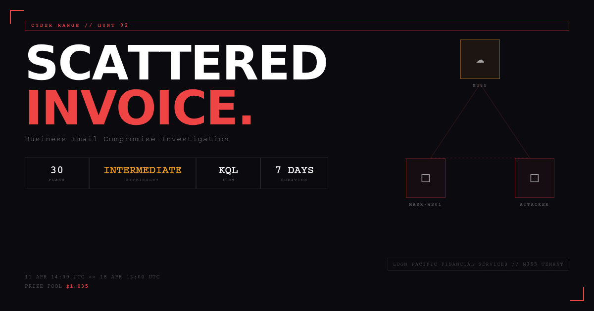

Objective
Determine how MFA was bypassed, identify the compromised account, reconstruct attacker activity, and document evidence of persistence, fraud activity, and cloud application access.

Business Email Compromise Investigation
A threat hunt into MFA fatigue, mailbox persistence, and attempted wire-transfer fraud.
On February 26, 2026, Mark Smith received repeated multi-factor authentication prompts and eventually approved one. The approval allowed an attacker to access Mark's mailbox from an unfamiliar IP address and location. Shortly after gaining access, the attacker attempted a Business Email Compromise scheme by sending a wire transfer request for $24,500 to the finance department. The bank detected and froze the transaction before the funds were lost.
The hunt identified MFA fatigue as the initial access method, malicious mailbox rule creation for persistence and defense evasion, access to Outlook Web, OneDrive for Business, and SharePoint Online, and attempted internal financial fraud from the compromised account.
Determine how MFA was bypassed, identify the compromised account, reconstruct attacker activity, and document evidence of persistence, fraud activity, and cloud application access.
An attacker may have used MFA push fatigue to obtain valid access, then used the compromised mailbox to create forwarding and deletion rules before launching a BEC wire-transfer attempt.
Investigation Results
The compromised user was Mark Smith, with the alternate sign-in name m.smith@lognpacific.org.
Assessment: Confirmed account compromise.
The attacker triggered repeated MFA prompts. After 4 failed/unsuccessful prompts, one MFA request was approved and the attacker gained access.
Assessment: Confirmed MFA fatigue attack.
Normal activity used 172.175.65.103. The suspicious sign-in used 205.147.16.190 from the Netherlands, outside Mark's normal activity pattern.
Assessment: Anomalous sign-in confirmed.
The attacker used Linux and Mozilla Firefox 147.0, which differed from the corporate Windows baseline.
Assessment: Device and browser anomalies support malicious access.
The first post-authentication action was MailItemsAccessed. The attacker then created inbox rules to forward invoice-related messages and hide security warnings.
Assessment: Confirmed mailbox collection and persistence.
The attacker sent a finance-related request from the compromised account. The email was intra-organizational and the sender IP matched the attacker IP.
Assessment: Confirmed attempted BEC fraud.
Normal sign-in activity
Mark's legitimate activity observed from 172.175.65.103.
MFA prompt activity
Attacker initiates repeated MFA prompts against Mark's account.
Successful attacker sign-in
Suspicious sign-in from 205.147.16.190 in the Netherlands after MFA approval.
Mailbox access
First post-auth action recorded as MailItemsAccessed.
Inbox rules created
Rules named . and .. created for forwarding and deletion.
BEC attempt
Finance department receives a wire-transfer request for $24,500.
Funds frozen
The bank detects the transaction and freezes the funds.
m.smith@lognpacific.org172.175.65.103205.147.16.190insights@ducks.com. ..Outlook Web OneDrive SharePointForwarding rule: Named ., forwarding emails to insights@ducks.com when messages included keywords such as invoice, payment, and wire transfer.
Deletion rule: Named .., deleting messages containing suspicious, security, phishing, unusual, compromised, and verify.
| Tactic | Technique | ID |
|---|---|---|
| Initial Access | Multi-Factor Authentication Request Generation | T1621 |
| Collection | Email Collection | T1114 |
| Collection | Email Collection: Remote Email Collection | T1114.002 |
| Persistence | Email Forwarding Rule | T1114.003 |
| Defense Evasion | Indicator Removal / Email Deletion | T1070 |
| Valid Accounts | Cloud Accounts | T1078.004 |
Risk Level: Critical
The attacker gained access to a valid Microsoft 365 account, accessed mailbox content, created hidden forwarding and deletion rules, accessed cloud applications, and attempted invoice fraud against the finance department. Financial loss was prevented, but the mailbox and related cloud activity should be treated as compromised.
Revoke active sessions, reset credentials, enforce Conditional Access, and require phishing-resistant MFA or number matching.
Disable or tightly control external auto-forwarding and alert on newly created inbox rules.
Create detections for repeated MFA prompts followed by success, new foreign sign-ins, and suspicious mailbox rule creation.
Train users to report unexpected MFA prompts and repeated authentication requests immediately.
The threat hunt confirmed that the attacker bypassed MFA through push fatigue, accessed Mark Smith's mailbox, created persistence and evasion rules, and attempted financial fraud. The organization should immediately strengthen MFA controls, fix Conditional Access policy gaps, monitor mailbox rule creation, and hunt for similar activity across other accounts.